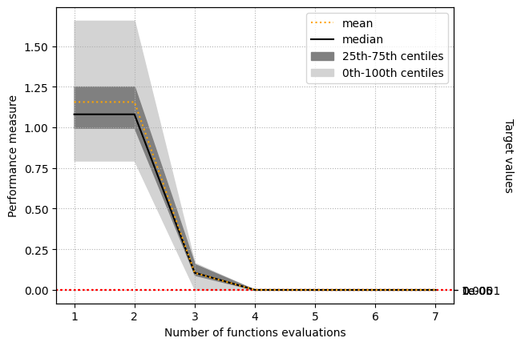
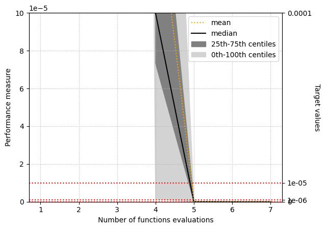

L-BFGS-B with 2 Hessian corrections on Rastrigin
Performance measure

The performance measure of algorithm configuration 'L-BFGS-B with 2 Hessian corrections' for problem 'Rastrigin'.

The performance measure of algorithm configuration 'L-BFGS-B with 2 Hessian corrections' for problem 'Rastrigin'.
| L-BFGS-B with 2 Hessian corrections | |
|---|---|
| maximum | 5.32907e-15 |
| 75th centile | 3.55271e-15 |
| median | 0 |
| 25th centile | 0 |
| minimum | 0 |
The final feasible performance measure of algorithm configuration 'L-BFGS-B with 2 Hessian corrections' for problem Rastrigin.